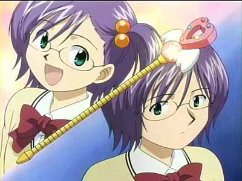
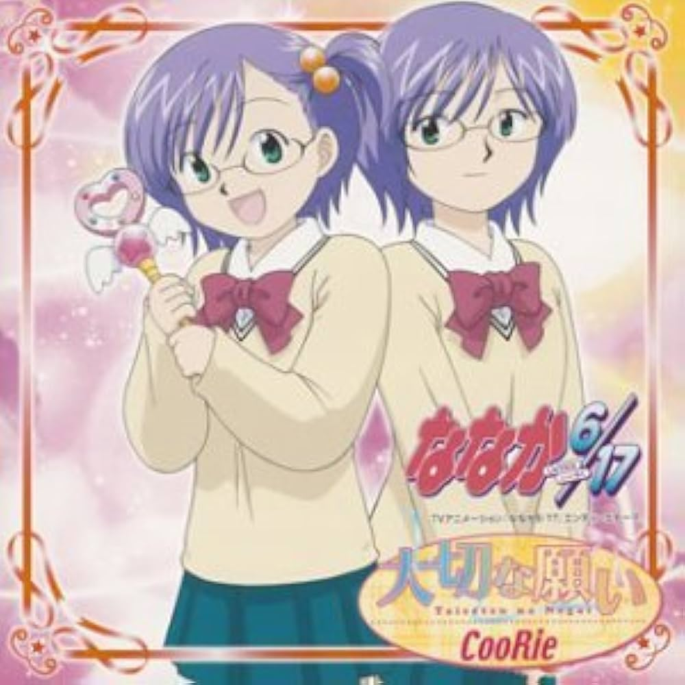

.png)

!
Nanaka 6/17 es un universo en el mundo de el manga y el anime que relata la vida de Nanaka y las personas a su alrededor (sobretodo Ninji) tras un accidente que deja a Nanaka, la protagonista de 17 años, fría y distante, en un estado mental en el que piensa y sólo recuerda tener 6 años de edad, cuando solía ser una chica activa y apasionada, pensando que se ha hecho físicamente más mayour gracias a su deseo de crecer tras el fallecimiento de su madre.
Ninji, su amigo de la infancia que empezó a disociarse de Nanaka durante el mismo año escolar por las peleas y problemas en los que se metía, se ve forzado a ayudarla y mantener el secreto al considerar que el accidente fue culpa suya.
Juntos, viven la experiencia cómica de crecer de nuevo, Nanaka desde la perspectiva de una niña y Ninji desde la de un adolescente inmaduro.

Este sitio web es desarrollado por Hexade/Superboom12 como método de práctica para desarrollo de aplicaciones web, seleccioné la temática de Nanaka 6/17 porque, tras ver el anime, me enamoré de él, pero no sólo eso, quería más, leer el manga, interactuar con otros fans... Pero fue entonces cuando me dí cuenta de que no hay fanáticos en los años que corren y que el anime ha sido prácticamente olvidado, no encontré el doblaje en japonés, el que se supone es el original, tampoco logré encontrar ningún sitio donde leer los mangas (que, agrego, no fueron traducidos a ningún idioma y sólo se dispone de ellos en japonés, aunque en cierto punto se planeó una traducción de los dos primeros tomos), tan sólo unos pocos individuos en Reino Unido que se disponen a vender toda la colección (a excepción de Nanaka 6/17+, el tomo que más me interesa, aunque aparentemente se puede alquilar el ebook en japonés en Amazon Japón) en japonés a precios exagerados. El objetivo de este sitio es darle visibilidad al anime y recolectar toda la información y contenido acerca del mismo para todo aquel que se interese por él en el futuro, todo mientras practico algo de front-end.
